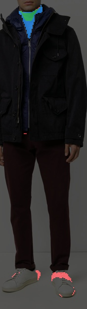
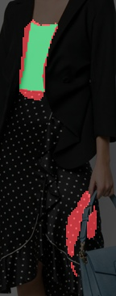
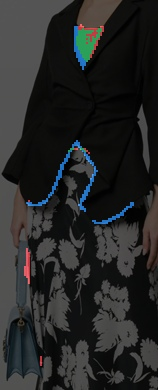
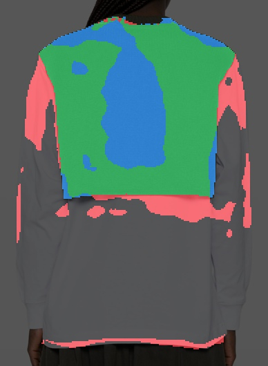

Do small and layered examples fix the remaining misses?
Training complete — validation gates passed
Updated 2026-09-27 03:55 UTC · hard GPU stop Sep 26, 08:56 PM PDT. 18,511 main training images + 1,024 auxiliary images / 490 validation images. Named cases remain held out. Automatic SAM3-derived supervision; no human annotations.
The parent correction model improved overall partitions and preserved 650 already-correct validation regions, but still failed the named collar and barely improved the tanks. Both continuation arms start from its same 4,000-update checkpoint, with identical optimizer settings and 2,000 additional updates.
Control: more main-store examples. Auxiliary-data arm: 40% sliver/small-garment examples with freshly generated SAM3 masks, 60% main-store examples. The auxiliary images were fixed in advance and exclude held-out source and partner SKUs. Old auxiliary mask annotations are ignored. This remains the same DETR-style correction model; only training data differs.
Running on RTX 5090: H200 had only 2 MiB free and failed before any optimizer update. Microbatch 4 × 3 accumulation = effective batch 12; original deadline retained.
Promotion: none. Quality-pass status is true; checkpoint selection uses validation only. Named cases are for inspection.
Selected head on NVIDIA GeForce RTX 5090: median 13.52 ms, p95 14.10 ms. Cached GPU C-RADIO tokens + RGB to CPU 640px labels. Encoder time is excluded; this is not an end-to-end latency claim.
Expanded preservation check: 650 previously correct regions, mean IoU 0.912 → 0.912; 3 fell below 0.50 IoU. Within one percentage point: True.
Complete pipeline on the same images: student 42.2 ms median / 43.4 ms p95; SAM3 90.1 ms median / 98.7 ms p95. Median speedup 2.14×. Both start with a 640px PIL image and return CPU640 labels; image encoding and postprocessing are included. SAM3 uses a shared vision pass and four batched prompts with cached text features. Speed improvement does not establish equal segmentation quality.
Mask-aware calibration: 337,793 parameters, trained on automatic IoU targets for all valid proposals. Gate product ≥ 0.65. Validation pass: True. Improves the selected model under the same selection rule: False. Cached-feature median 10.51 ms / p95 11.48 ms; encoder excluded.
Named hard cases: the selected checkpoint reaches 0.50 teacher-region IoU on 2 of 4. Passing aggregate validation gates does not mean every hard garment is fixed, and this is not SAM3 quality parity.
Untouched test split — 513 images: PQ 0.360 → 0.427; hard-region recall 0.000 → 0.153. Previously correct regions (711): mean IoU 0.905 → 0.905. The model and threshold were frozen before this test. Evaluated model: selected segmentation model with original product gate.
Deployment correction: BF16 batch-one head inference changed the active baseline regions and could reject a mask that passed batched evaluation. The delivered head runs FP32 with TF32 enabled; fresh encoder output is quantized through fp16 to match the feature store. Validation and the fixed test model were rechecked at batch one. Stable inference exceeds the original ~11 ms head target; the timings above use the corrected path. Earlier continuation rows document the original BF16 selection experiment.
Model
PQ ↑
FG IoU ↑
Hard recall ↑
Small easy IoU ↑
Splits ↓
Merges ↓
False seam fraction ↓
Same-piece agreement ↑
Cross-piece collision ↓
Starting head
0.368
0.741
0.000
0.862
1.298
1.404
0.392
0.640
0.219
Parent correction model
0.439
0.795
0.068
0.878
1.233
1.263
0.313
0.732
0.202
control · +2,000 · confidence ≥ 0.15
0.398
0.729
0.112
0.744
1.749
1.343
0.318
0.733
0.174
control · +2,000 · confidence ≥ 0.25
0.422
0.778
0.124
0.811
1.543
1.288
0.310
0.725
0.178
control · +2,000 · confidence ≥ 0.35
0.436
0.793
0.112
0.849
1.414
1.271
0.304
0.724
0.189
control · +2,000 · confidence ≥ 0.50
0.444
0.800
0.080
0.849
1.214
1.261
0.304
0.723
0.206
control · +2,000 · confidence ≥ 0.65
0.437
0.801
0.048
0.876
1.165
1.247
0.311
0.707
0.209
aux · +2,000 · confidence ≥ 0.15
0.388
0.758
0.147
0.828
1.835
1.345
0.340
0.715
0.173
aux · +2,000 · confidence ≥ 0.25
0.412
0.792
0.139
0.832
1.661
1.333
0.333
0.714
0.180
aux · +2,000 · confidence ≥ 0.35
0.431
0.805
0.120
0.845
1.490
1.280
0.327
0.717
0.184
aux · +2,000 · confidence ≥ 0.50
0.441
0.811
0.080
0.856
1.294
1.235
0.323
0.714
0.203
aux · +2,000 · confidence ≥ 0.65
0.435
0.801
0.048
0.847
1.198
1.255
0.329
0.702
0.211
Selected · 5,000 updates
0.442
0.801
0.100
0.860
1.296
1.263
0.301
0.721
0.196
Mask-aware gate candidate
0.432
0.799
0.064
0.876
1.206
1.265
0.331
0.698
0.206
All four requested cases
Colors align by one-to-one matching to the reference. Gold outlines identify the requested piece. These images are held out from training and checkpoint selection.
Green = agreement with the SAM3 region · red = extra pixels assigned to this piece · blue = missed pixels. The crop includes the union of the reference and both predicted regions, so contamination outside the garment remains visible.
Starting head · IoU 0.233 Extra: 60.5% of predicted pixels · missed: 63.9% of reference

Selected checkpoint · stable runtime · IoU 0.236 Extra: 76.1% of predicted pixels · missed: 5.1% of reference
Green = agreement with the SAM3 region · red = extra pixels assigned to this piece · blue = missed pixels. The crop includes the union of the reference and both predicted regions, so contamination outside the garment remains visible.
Starting head · IoU 0.489 Extra: 51.1% of predicted pixels · missed: 0.0% of reference

Selected checkpoint · stable runtime · IoU 0.783 Extra: 4.8% of predicted pixels · missed: 18.4% of reference
Green = agreement with the SAM3 region · red = extra pixels assigned to this piece · blue = missed pixels. The crop includes the union of the reference and both predicted regions, so contamination outside the garment remains visible.
Starting head · IoU 0.282 Extra: 43.4% of predicted pixels · missed: 64.0% of reference

Selected checkpoint · stable runtime · IoU 0.298 Extra: 36.8% of predicted pixels · missed: 64.0% of reference
Green = agreement with the SAM3 region · red = extra pixels assigned to this piece · blue = missed pixels. The crop includes the union of the reference and both predicted regions, so contamination outside the garment remains visible.
Starting head · IoU 0.553 Extra: 26.3% of predicted pixels · missed: 31.1% of reference

Selected checkpoint · stable runtime · IoU 0.553 Extra: 26.7% of predicted pixels · missed: 30.8% of reference
What is trained
The original head and all its weights are immutable. No correction means the original partition remains.
Two correction queries per baseline region plus 12 global queries. Parent queries attend around the original region.
Hungarian matching uses mask overlap, balanced mask loss and correction-presence cost.
Independent sigmoid masks receive whole-region supervision, hard-negative pixel loss, presence loss and an estimated-IoU loss. There is no softmax forcing every pixel into a correction.
A single automatic SAM3 export supplies targets. Named cases and validation SKUs stay out of training.
The expanded 650-region preservation gate is included in selection. Checkpoint and confidence threshold are selected on validation only. Confidence is learned against SAM3 agreement, not calibrated human correctness.
Accepted corrections are assigned in score order. Overlap is exclusive and previously predicted foreground cannot disappear. This guarantees partition bookkeeping, not correct garment boundaries. A confident bad correction can still fail, which is why the validation gates and all four hard cases are shown.
Teacher references changed to remove the faulty target composition. Scores here should be compared within this run, not directly against the earlier composite-target table.